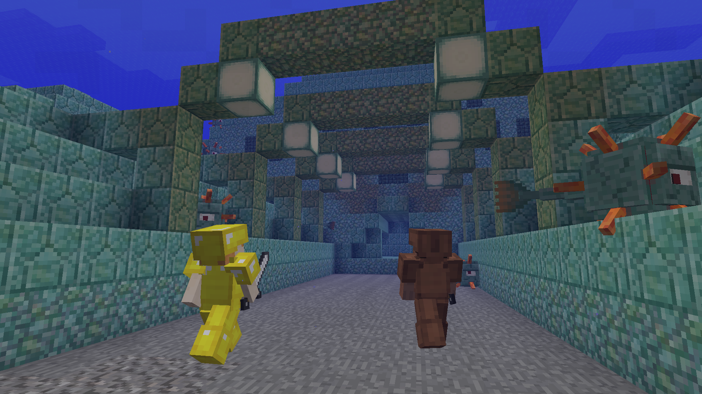
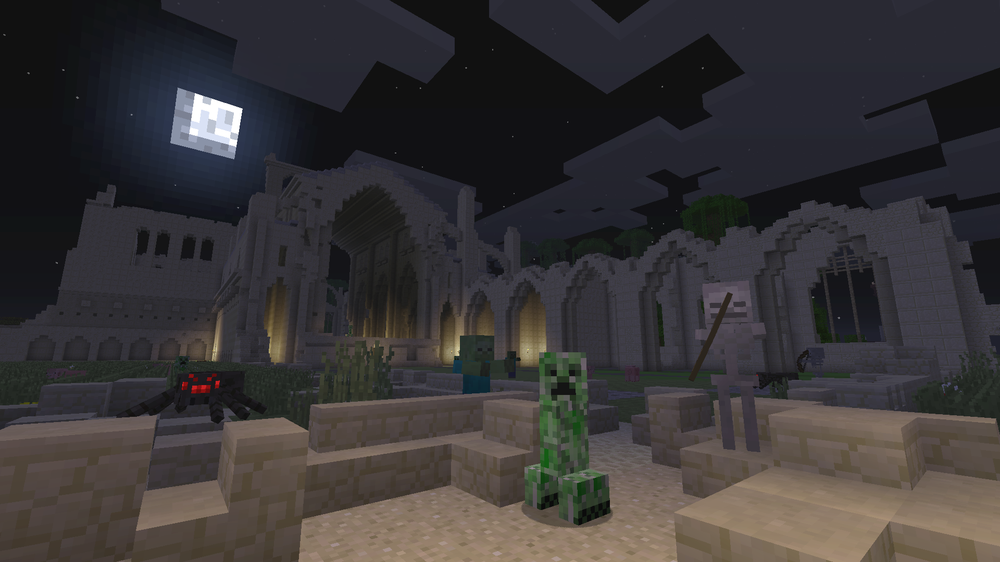

Hello!
We’ve just updated Minecraft for Xbox 360, Xbox One, Playstation 3, and Playstation 4 with a staggering amount of features. Yes, we’re constantly improving Minecraft on all platforms but this is actually our biggest update ever, bringing the console versions closer to the current PC build than they’ve ever been before.
To prove this, I present the following changelog which will require significant amounts of vertical scrolling. From henceforth, this update will be known as “Update 1.8.8.”
Two quick notes about 1.8.8 on other consoles before we get into it: the update is slightly delayed for Minecraft on Playstation Vita so expect it to arrive in the next few days. And, though we’re working hard to bring these features to Nintendo’s console, 1.8.8 won’t be available on Wii U until some time next year.
OK. Enough chatter. Here’s a trailer and the full changelog!
New items for all modes
Armour Stand, Raw Rabbit, Cooked Rabbit, Rabbit Stew, Raw Mutton, Cooked Mutton, Rabbit’s Foot, Rabbit Hide, Potion of Leaping, Potion of Water Breathing, Salmon, Cooked Salmon, Clownfish, Pufferfish, Blue Orchid, Allium, Azure Bluet, Tulips, Oxeye Daisy, Sunflower, Lilac, Poppy (replaces Rose), Rose Bush, Peony, Double Tall Grass, Large Ferns, Prismarine Crystals, and Prismarine Shard have all been added!
New items for Creative Mode
Rabbit Spawn Egg, Endermite Spawn Egg, and Guardian Spawn Egg can now be used in Creative Mode.
New blocks
Podzol, Granite, Polished Granite, Andesite, Polished Andesite, Diorite, Polished Diorite, Prismarine, Dark Prismarine, Prismarine Bricks, Red Sand, Red Sandstone, Smooth Red Sandstone, Chiseled Red Sandstone, Red Sandstone Stairs, Sea Lanterns, Wet Sponge, Slime Blocks, Coarse Dirt, Packed Ice, Acacia Saplings, and Dark Oak Saplings are now available in-game.
New mobs
Endermite, Guardian, Elder Guardian, Rabbit, and Chicken Jockey now roam the lands!
New biomes
Mesa, Mega Taiga, Roofed Forest, Birch Forest, Forest, Savanna, Extreme Hills+, Deep Ocean, and Snowless Taiga are all available for exploration.

More features that I’ll list using bullet points to save bandwidth
- Treasure can now be caught while fishing. There are a lot of cool things to find!
- Enchanting now consumes Lapis Lazuli, and enchanting books can receive multiple enchants at once.
- Villagers now have additional professions, and will harvest crops and breed. To encourage that kind of behaviour, give them 3 bread, 12 carrots, or 1 potato. They’ll also turn into Witches when struck by lightning.
- Now any rectangular shape from 4x5 to 23x23 will work as a Nether Portal. Ghasts can travel through them too.
- You can use Pumpkins or Wither Skeleton Skulls to spawn Golems and Withers.
- We’ve rebalanced the Anvils.
- Moss Stone, Mossy Stone Bricks and Chiseled Stone Bricks are now obtainable via crafting.
- You can now use a furnace to create Cracked Stone Bricks and Sponge.
- Empty Furnaces will now only accept fuel and empty Buckets in the fuel slot.
- Item Frames now emit a Redstone signal, and can rotate in 8 directions.
- Redstone comparators can now detect the rotation of an item in an item frame and output an equivalent power signal.
- Buttons can now be placed on the top and bottom of blocks.
- Powered Activator rails now dismount entities riding Minecarts.
- Water-filled Cauldrons will put out burning entities, taking away one water level each time.
- When harvested with Silk Touch enchantment, Huge Mushroom Blocks drop blocks with corresponding Mushroom texture (red or brown) on all sides.
- We’ve reintroduced Sponge to Survival Mode with new behaviour and texture.
- Sugar Cane colour is now affected by biome.
- Baby Zombies now drop XP Orbs.
- Creepers can now be ignited with Flint and Steel.
- Adult Zombie Pigmen will now forgive after a short time.
- Witches now drink a Potion of Water Breathing when they are trapped underwater and can drop a Potion of Water Breathing upon death.
- Melons can now be found in patches similar to Pumpkins in the Jungle Biome.
- Swamp Biomes now feature Blue Orchid Flowers.
- Plains Biomes now generate Azure Bluets, Oxeye Daises, Tulips, and Double Tall Grass.
- Extreme Hills Biomes now feature Snow at higher elevations.
- Ocean Biomes now only feature Gravel on the floor instead of Sand, Dirt and Gravel.
- Desert Temples spawn with Stained Clay instead of Dyed Wool.
- Ocean Monuments now feature.
- New enchantments - Luck of the Sea (I-III), Lure (I-III), Depth Strider (I-III) -have been added.

More fixes and tweaks which subtly make the game more enjoyable
- Sheep now drop Mutton when they die.
- Arrows decelerate more quickly underwater and extinguish if on fire.
- Most mobs can now swim.
- Skeletons flee from wolves.
- Creepers, Skeletons, Wither Skeletons and Zombies drop their heads when killed by Charged Creepers.
- Spiders no longer see players through solid blocks.
- Baby mobs growth can be accelerated by feeding them.
- Fix for players adding additional layers above the maximum height in Superflat.
- Added Flint and Steel and Fire Charge sound effect when igniting blocks.
- Updated audio for Cows and Mooshrooms.
- Updated audio for Minecarts.
- Created a new Tutorial World.
Phew! I am exhausted. Enjoy 1.8.8, and have a fantastic holiday, kind crafter folk!
Owen - @bopogamel